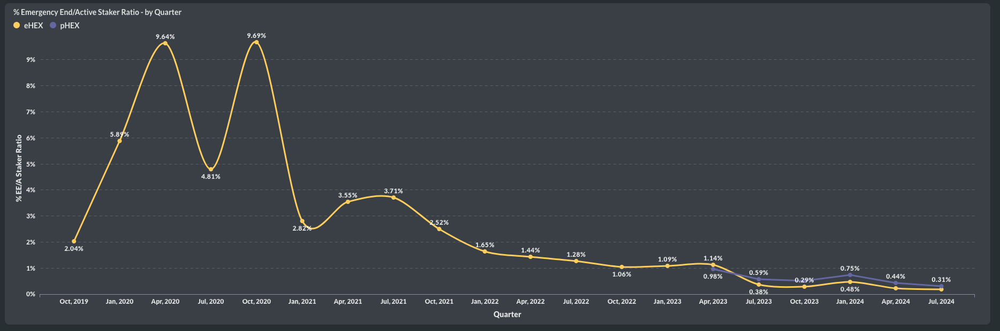

⚡️For the first time in two years, #HEX saw more stakes started than in the previous quarter. Is this the start of a trend? This is Part 1 of the #HEX quarterly report.
In Q3, 83% of the stakes were pHEX, while 17% were eHEX. As mentioned, staking may have just recovered from its all-time low of 13.7k stakes in Q2.
Although the number of stakes increased, the total staked amount dropped compared to the previous quarter, reaching 32B—still 7B more than in Q3 of last year. The ratio here is 70% pHEX and 30% eHEX.
The average amount of HEX staked remains impressive, with an average of 4M HEX staked on Ethereum and 1.8M HEX staked on Pulsechain.
The average staking length hasn’t changed since the last quarter. Median is still at an all-time low.
‚ù§Ô∏èü©πFurther improvements in the #HEX staking stats are evident in the Net Flow and Staking Ratio charts.
In Q3, -$10 million flowed out of HEX staking, which includes both eHEX and pHEX. It's encouraging to see that the overall trend in quarterly net flow continues to improve. Compared to the -$855 million outflow in Q4 2021, this is minimal and close to turning positive. It's also much lower than the outflow in Q2 this year.
The staking ratio increased finally in Q3, with pHEX improving from 0.7 to 0.72 and eHEX showing even stronger growth, rising from 0.23 to 0.29. A ratio of 1 would indicate that the number of new stakes matches those that ended.
Adoption levels for #HEX stagnated in Q3, but they did not decline further. (Part 3 - Adoption)
A total of 9.3k new users tried out #HEX across both Ethereum and Pulsechain, similar to the numbers seen before BPD and the 2021 run-up.
There were 38k active users in HEX, comparable to the quarter of BPD. Of these, 32k addresses were active in pHEX, and 12k were active in eHEX. This represents little change compared to the previous quarter.
We can observe stagnation in the overall number of active #HEX stakers. Interestingly, the combined number of active stakers increased by approximately +200 from Q2 to Q3, while active pHEX and eHEX stakers declined slightly. This suggests that some stakers decide to quit one chain while continuing with the other, or choose to stake on only one side. Specifically, pHEX declined by around -400 active stakers, and eHEX declined by about -1,000 active stakers.
Native user growth continues, although staking does not appear to be a focus for them. pHEX is experiencing significantly higher growth in native users than eHEX. In total, we have reached 455k HEX users, 416k pHEX users, and 394k native users.
üìä Stable Usage in #HEX Q3 - Part 7 of the Quarterly Report
We saw 518k transactions in Q3, a level similar to last quarter and comparable to the volume when HEX peaked in 2021. Of these, only 42k transactions were native eHEX transactions.
Examining these 42k eHEX transactions, we observed an increase in the staking share to 26% of all transactions, up from 23% in Q2 and 13% in Q1. Staking activity looks quite healthy. Many End Stakes recently of course.
More stats on usage in the next quarterly report. For now I haven't setup all of the charts from the monthly report.
üìà The user circulating supply for #HEX increased in Q3. Where does it stop? Part 8 - Supply
The user circulating supply for pHEX was estimated at 25.3 billion, an increase of 1.6 billion. However, eHEX saw an even greater increase, reaching 34 billion in user circulating supply last quarter.
These increases led to a stabilization of the user market cap in Q3 while having lower prices, now valued at $193 million. Within this, eHEX maintained a user market cap of $50 million.
Due to the substantial increase in eHEX's user circulating supply, the share of the OA in the circulating supply dropped below 95% to 94.35%, while pHEX stands at 95.7%.
Do you think we'll observe a slowdown or even a reversal in Q4? October data is almost ready, but I'm currently facing some Ethereum node issues, which should be resolved soon, though they temporarily limit insights.
üçØIt's incredible how the #HEX yield continues to grow quarter after quarter. This is Part 5 of the quarterly report.
For HEX staking, the average yield on Ethereum reached 52.31%, while on Pulsechain, it was 35.96%. Excluding stakes with penalties, stakes on Ethereum achieved a new record of 70.28%, while on Pulsechain, it matched last year’s Q4 2023 high of 42.26%.
The quarterly APY numbers for eHEX are as follows:
For pHEX, the quarterly APY numbers are:
üìâ Huge Reduction in #HEX Penalties in Q3: Part 6
This year, we witnessed several significant whales emergency end staking, particularly in March and April. However, things have since quieted down. In Q3, we returned to a normal level of total penalties, amounting to 336 million HEX. Of this, pHEX accounted for 59% and eHEX for 41%.
Looking at the proportion of emergency end stakers relative to active stakers, we see a new record low: only 0.31% of all active stakers in pHEX and 0.19% in eHEX chose to emergency end stake. The vast majority are staying calm and happily continuing to stake!

üèÜ Q3 was the best quarter yet for 5555 #HEX stakes. This is the final part of the HEX quarterly report.
We saw 1.6k full-length HEX stakes, of which 84% were pHEX stakes, with the remaining being eHEX. This has been the best quarter of the year so far, though there is still a long way to go to reach previous highs.
A total of 238 million HEX was staked for 15 years across these 1.6k stakes, reflecting strong commitment. For the first time, the pHEX amount surpassed the eHEX amount, with pHEX leading by 16 million—though the split remains close to 50-50.
I hope you enjoyed this quarterly report. I'll soon have the October numbers, which are already looking promising.